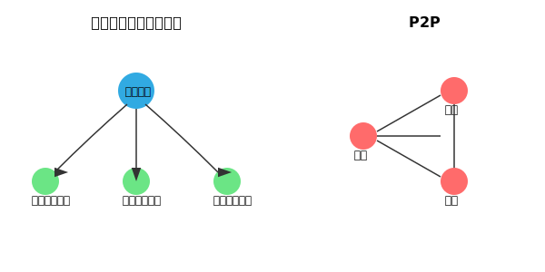
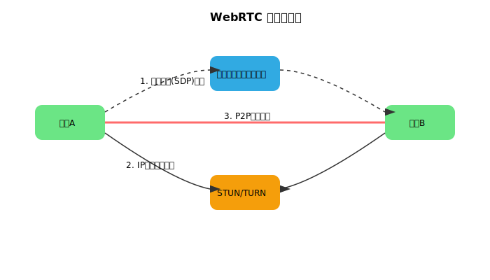

JavaScriptでP2P通信をする方法
PeerJSを使った実践的な解説
#P2P通信とは？
P2P（Peer-to-Peer）通信とは、中央のサーバーを介さずに、個々のノード（コンピュータ）が直接データをやり取りする通信方式です。 一般的なWebアプリはクライアント⇔サーバ型（中央集約型）ですが、P2Pでは各端末が互いにサーバー兼クライアントとなり、より効率的かつ分散的な通信が可能です。

#P2P通信のメリットとデメリット
| 項目 | メリット | デメリット |
|---|---|---|
| サーバ不要 | 中央サーバなしで通信が成立 | 初期接続にはシグナリングが必要 |
| 冗長性 | 一部ノードが落ちても通信可能 | 各ノードの安定性に依存 |
| コスト | 運用コストが低い | セキュリティ管理が分散 |
| スケーラビリティ | ノード増加で性能拡張 | 管理が複雑化 |
#P2P通信の活用例
ファイル共有
例：BitTorrent
ビデオ・音声通話
例：WebRTC
ブロックチェーン
例：Bitcoin
分散型SNS
例：Mastodon
#実際のP2P通信を試してみよう
リアルタイム通信デモ
以下のフォームを使って、相手のIDを入力し接続し、テキストを送信できます。
通信ログ:
#使用方法（2人で試す）
1
ページを2人で開く
同じLANまたはインターネット経由で2人がこのページを開きます。
１人で試す場合は、ブラウザでこのページを２つ開いてください
2
IDをコピー・共有
一方の人が自分のIDをコピーして、もう一方の人に教えます。
3
接続する
教えてもらったIDを「相手のID」欄に入力して「接続」ボタンを押します。
4
メッセージ送信
メッセージを入力して「送信」ボタンを押すと、リアルタイムで相手に届きます。
#JavaScriptコードの解説
🚀 初期化部分
const peer = new Peer();
const connections = new Map();
let myPeerId = null;解説：P2P通信の土台を準備するコードです。各変数が重要な役割を担います。
const peer = new Peer();: PeerJSライブラリの心臓部であるPeerオブジェクトを生成します。これがシグナリングサーバーとの通信や、他のピアとの接続管理を行います。const connections = new Map();: 接続が確立された相手の情報を管理するためのMapオブジェクトです。キーに相手のID、値に接続オブジェクトを保存し、複数の相手との通信を可能にします。let myPeerId = null;: PeerJSサーバーから割り当てられる自分自身のユニークなIDを格納するための変数です。接続時にこのIDが他のピアに通知されます。
🔗 接続処理
function connect() {
const targetId = document.getElementById('target-id').value;
if (!targetId || targetId === myPeerId) return;
const conn = peer.connect(targetId);
setupConnection(conn);
}解説：「接続」ボタンが押されたときに、指定された相手にP2P接続を開始する関数です。
const targetId = ...: HTMLの入力欄から、接続したい相手のIDを取得します。if (!targetId || ...): IDが入力されていない、または自分のIDと同じ場合は、処理を中断します。const conn = peer.connect(targetId);:peerオブジェクトのconnectメソッドを使い、相手のIDに対してデータ接続を開始します。これにより接続オブジェクトconnが返されます。setupConnection(conn);: 生成された接続オブジェクトに対して、データ受信時や接続完了時などのイベントハンドラを設定する別の関数を呼び出します。
📨 メッセージ送信
function send() {
const msg = document.getElementById('msg').value;
const data = { type: 'text', text: msg, senderId: myPeerId };
for (const conn of connections.values()) {
if (conn.open) conn.send(data);
}
}解説：メッセージ入力欄のテキストを、現在接続している全ての相手に送信する関数です。
const msg = ...: HTMLのメッセージ入力欄から送信したいテキストを取得します。const data = { ... };: 送信するデータをオブジェクトとして作成します。メッセージ本文に加え、送信者のIDなどの追加情報も格納できます。for (const conn of ...):connectionsマップに保存されている全ての接続に対してループ処理を行います。if (conn.open) conn.send(data);: 接続が確立されている（open状態）ことを確認し、sendメソッドでデータオブジェクトを相手に送信します。
#技術的な詳細
使用技術
- PeerJS: WebRTCを簡単に使えるライブラリ
- WebRTC: ブラウザ間のリアルタイム通信API
- JavaScript: フロントエンド制御
通信の流れ
- PeerJSサーバーからIDを取得
- IDを交換してシグナリング
- WebRTCでP2P接続確立
- 直接データ通信開始

#実践的な応用例
このP2P技術を応用して、リアルタイムでメッセージを交換できるウェブアプリケーションを作成しました。以下のリンクから実際に試したり、ソースコードを確認したりできます。
制作時間:約10時間